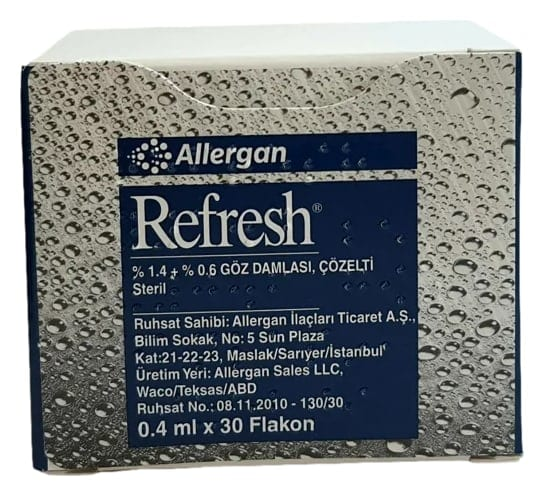

Refresh % 1,4 + % 0,6 Göz Damlası, Çözelti, 30 Adet

Ne için kullanılır
KT · Bölüm 1REFRESH, berrak ve renksiz bir çözelti olup, tek dozluk flakonlara doldurulmuştur. REFRESH, 30 adet tek dozluk flakon içeren ambalajlarda sunulmaktadır.
REFRESH’in etkisi tamamen mekaniktir. Göz yüzeyinde kayganlaştırıcı ve nemlendirici etkisi bulunmaktadır. Göz yüzeyindeki gözyaşı hacmini artırır, gözyaşı filmini düzenler.
Bu amaçla, REFRESH; eksik veya yapıca bozuk gözyaşı tabakalarına bağlı olarak göz yüzeyinin nemlendirilmesinin bozulduğu göz kuruluğu gibi durumlarda kullanılır.